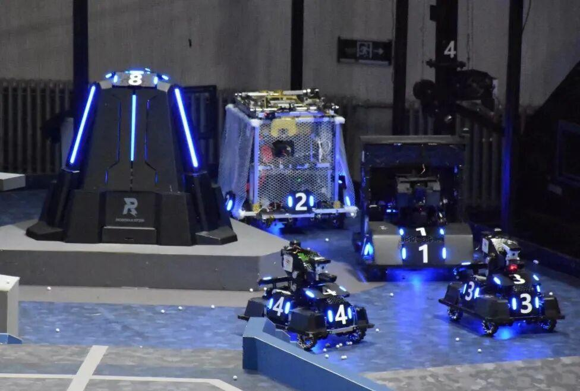
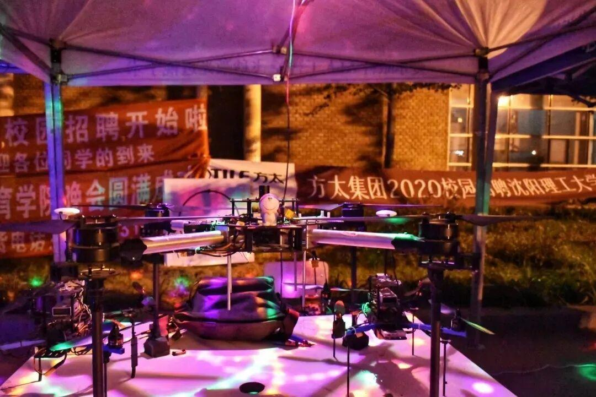
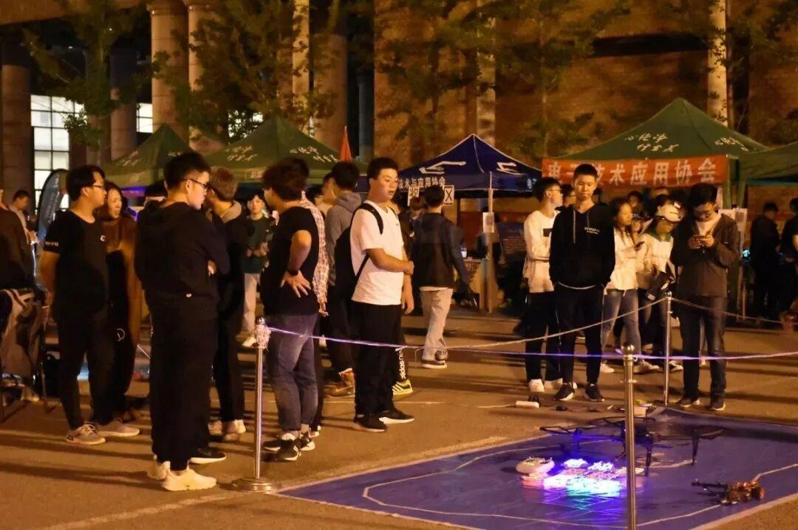
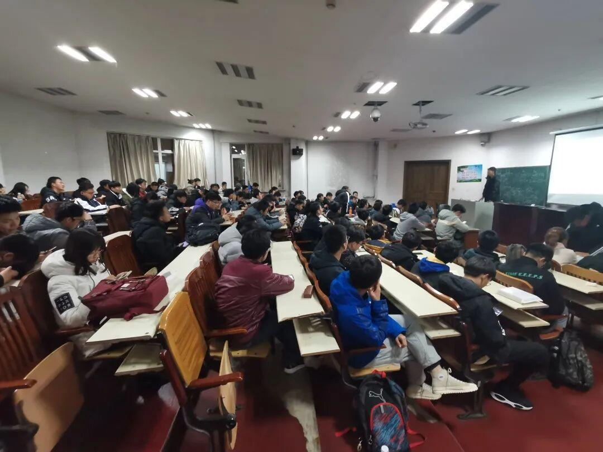
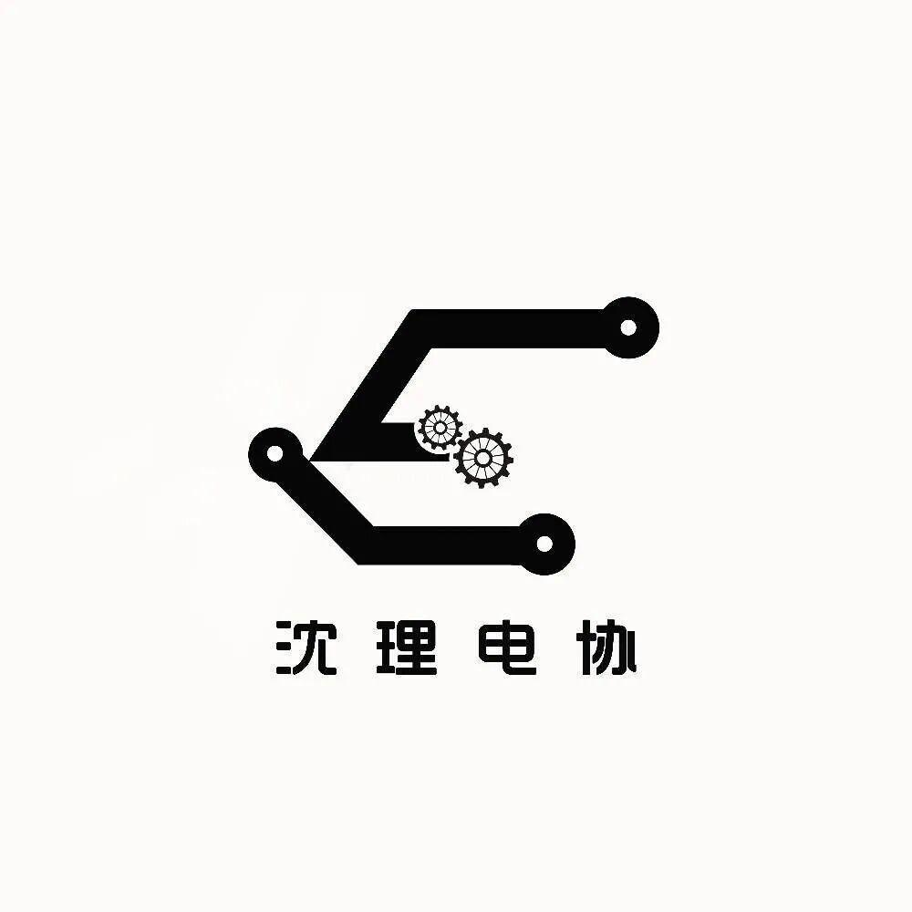

沈理电协，你了解多少？
电协简介
Brief introduction


01
社团简介
Community profile
电子技术与应用协会（简称电协）成立于2008年10月，是由校团委社团联合会领导的，一个以学习电子知识为主，培养动手能力的寓教于乐的学术性社团。社团涉足方向包括：机器人、无人机、3D打印、科技制作、软件开发、硬件编程等多个方向。目前是本校最大、最具影响力的社团之一。



02
社团目的
Corporate purpose
电协以"技术让梦想成为艺术”为信念，服务于广大沈阳理工大学在校生。电协社员们积极参加各项科技类竞赛，荣获国家级一等奖一项，国家级二等奖三项，国家级三等奖十余项，省级奖项百余项。电协培养了大量具有电子技术实践经历以及相关电子知识的人才，参加国家级机器人比赛，同各大高校保持紧密交流，不仅在高校之间的各种大赛中取得了优异的成绩，而且为社会上的各个招聘企业输送了大量电子技术人才， 具有较大社会影响力。



03
部门介绍
Department introduction
电协内部分为行政部和技术部。两大部门相辅相成、密不可分，共同为电协的发展发挥作用。
行政部
办公室·主要负责通知的上传下达和各部门之间沟通联系等，是一个能培养组织能力、沟通能力、管理能力的部门。
人事部·负责整个社团日常活动的人员通知与调动等，是一个能培养统筹管理能力的部门。
外联部·负责活动赞助的拉取、社团物品借还、与其他社团沟通联谊等，是一个能提高自己沟通能力的部门。
财务部 ·主要负责社团物资管理与购买、每次活动费用的申请与账单制作等，是一个培养耐心与责任心的部门。
信息部·主要负责日常活动、各种比赛的宣传及拍摄工作，负责电协各个新媒体平台的运营工作，是一个能锻炼对Photoshop、Premiere等软件的应用技巧以及宣传能力的部门。
技术部
电控组·主要职责为对所需代码的编写，对代码进行调试，使机器人或可编程机构实现预期效果。
机械组·主要职责为对机器人所需结构的搭建，对结构进行调试，使机器人具有达成预期效果的能力。
硬件组·主要职责为实验室嵌入式硬件的设计和维护以及程序的测试，日常工作主要是电路设计等。

04
比赛项目
Competition event
精彩回顾
国赛·RoboMaster机甲大师赛
省赛·大学生课外学术科技作品竞赛
省赛·辽宁省机器人大赛
省赛·电子设计大赛
校赛·礼物设计大赛
校赛·“理工杯”机器人大赛

图片|信息部
排版|辛学敏
扫面下方二维码关注我们